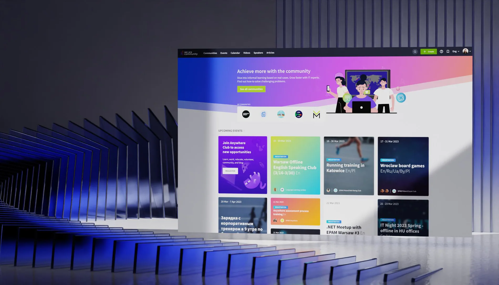
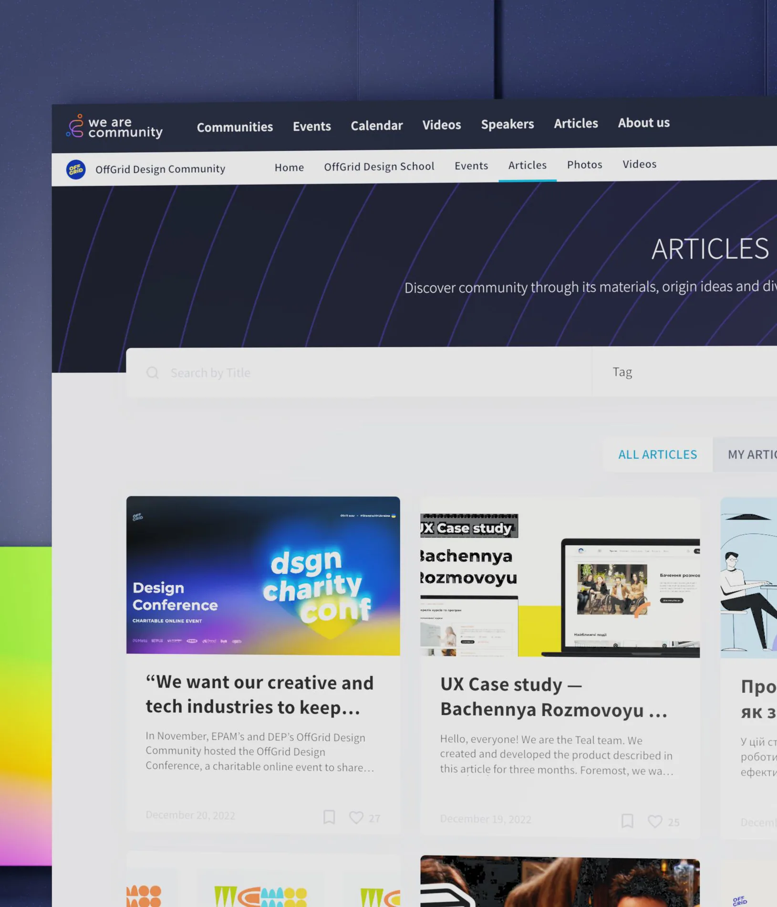
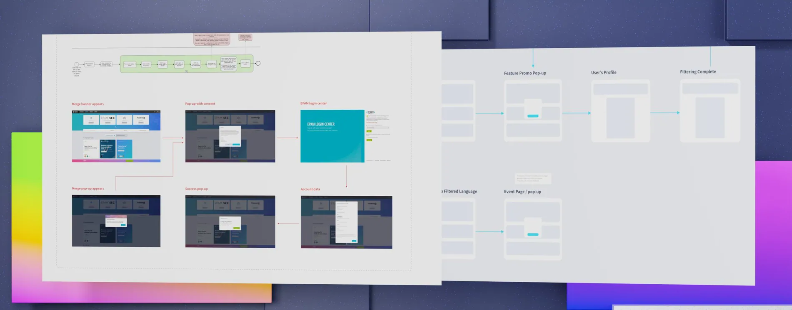
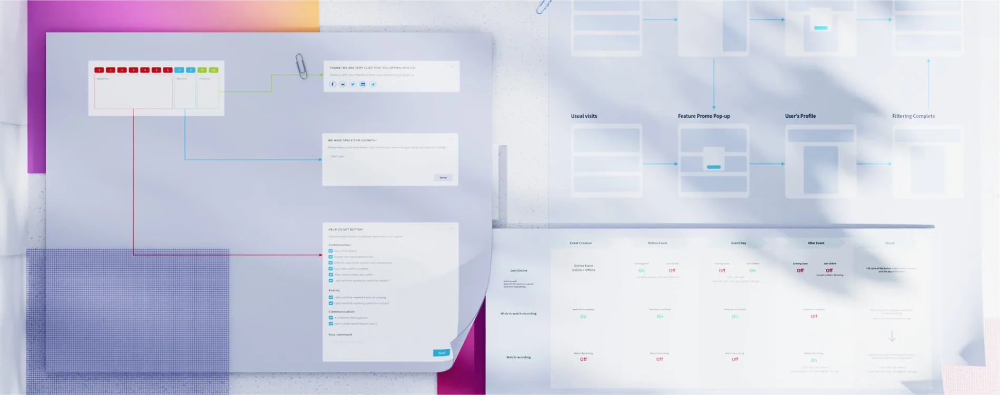
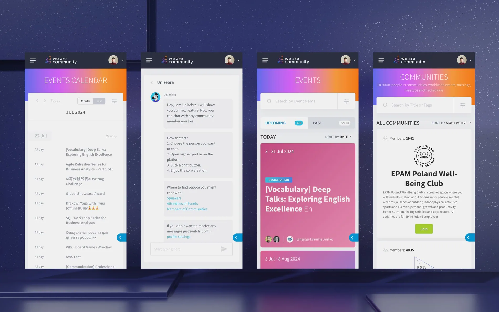

We Are Community
Building a place for engineers to connect.
SCROLL TO EXPLORE ↓
A space for engineers to connect, share and learn.
Designing an environment where specialists worldwide can host communities, collaborate and grow their networks.
- Project
- We Are Community
- Role / disciplines
- Platform / Experience design
- Period
- 2019 — 2020
Community comes from better connections.
Connecting specialists worldwide through communities, events and conversation.

I worked as a Designer on user experience for events organizers and community members.
Together We Are Community! This is the place for any engineer from any domain, country or company. Here you can host your community, call for speakers, communicate with your audience, build networks, share knowledge and collaborate with other experts and communities. For the community, communication between people is important, which means that you need to create a messaging system within the platform.
Research shaped the foundation.
I conducted user interviews and surveys, tested hypotheses, built user flows, conducted usability testing, and worked on improving the admin panel.

I actively participated in workshops with the product manager to generate and refine new ideas. My responsibilities included conducting user interviews and surveys, testing hypotheses, mapping user journeys, and performing user testing. I also focused on enhancing the admin panel and maintained effective communication and collaboration with the development team. Additionally, I defended design decisions by presenting supporting research and analytics.
Discovery and collaboration help prioritize what matters.
Testing, iterating, delivering.
New entry points, testing and cross-functional delivery.

For certain tasks, we conducted A/B testing, such as evaluating the Discount Bubble with different background colors to find the optimal balance between attracting customers and maintaining their engagement with the main booking flow.
During the second Define stage, we identified key user scenarios and new entry points for the page. We gathered insights and requirements from the development team and, through a collaborative workshop, generated and validated ideas with the Business Analyst (BA) and development team for feasibility. In the design phase, I created low-fidelity prototypes for initial idea testing and collaborated with the UI designer responsible for the Design System. I conducted usability testing, iterated on the design based on feedback, and worked closely with the content team to ensure consistency, followed by a second round of usability testing.
In the delivery phase, I collaborated with the designer responsible for the Design System and the front-end team to create documentation and develop new components, while also reusing existing ones to ensure site consistency and alignment with the brand's tone and voice. Additionally, I monitored post-implementation metrics to assess the impact of design changes on both business outcomes and user experience.
Community, measured in participation.
Results and achievements reported for the community platform.
